Brand guidelines.
How Lyra looks and sounds, and every file you need to make more of it. The short version: paper, ink, one mark that means here, and a little cluster of orbs.
A little cluster.
Lyra keeps tabs the way you keep errands: in small clusters, each one a window of its own. The icon is one of those clusters, four of the new tab's balls packed as close as the clusters plane packs them.
The orbs bring the colour, bright and flat. Amber keeps its one job in the row. The mark always means here.
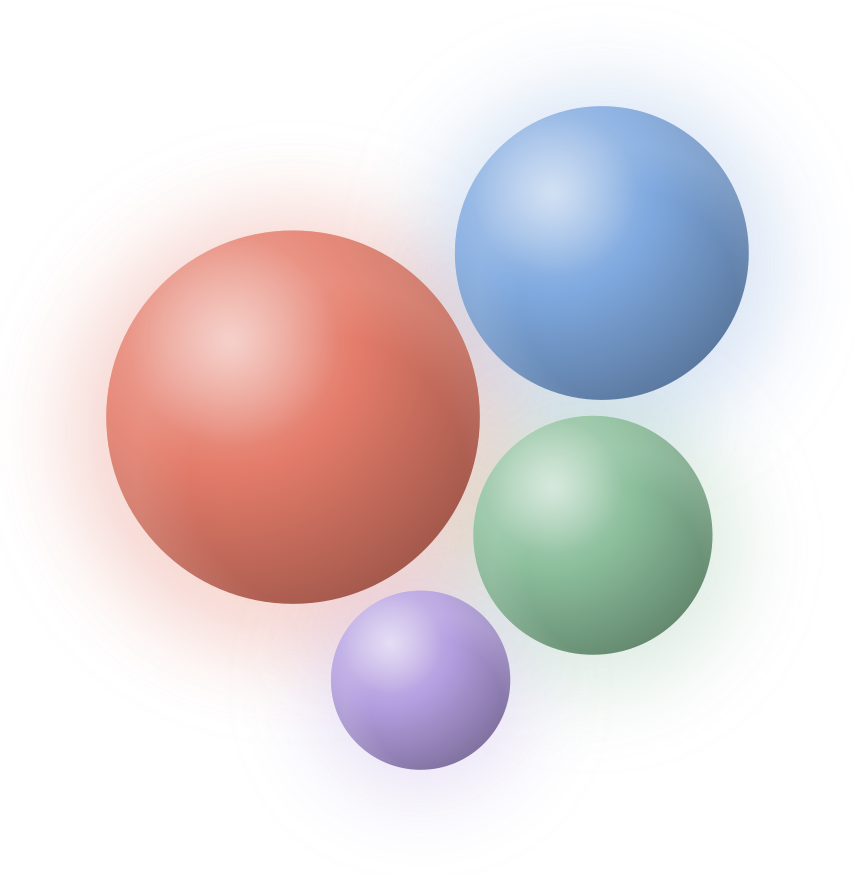
Logo.
The lockup is the app icon beside the wordmark. The icon already carries the colour, so the word beside it goes without its stroke.
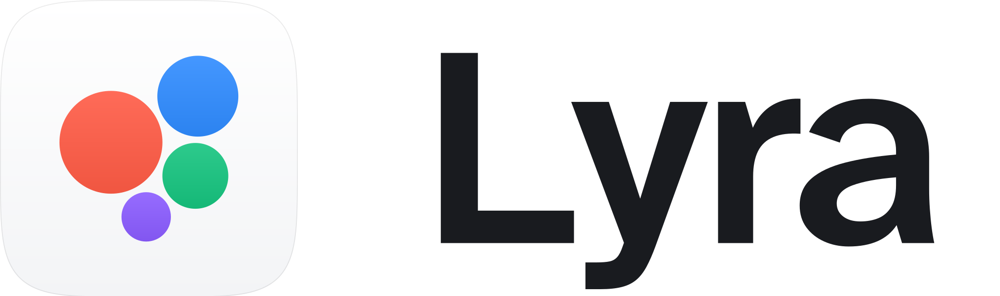
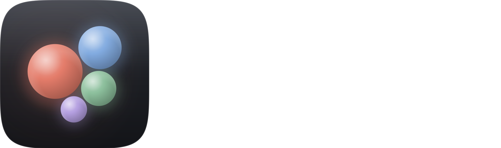
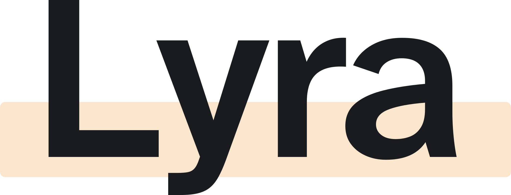
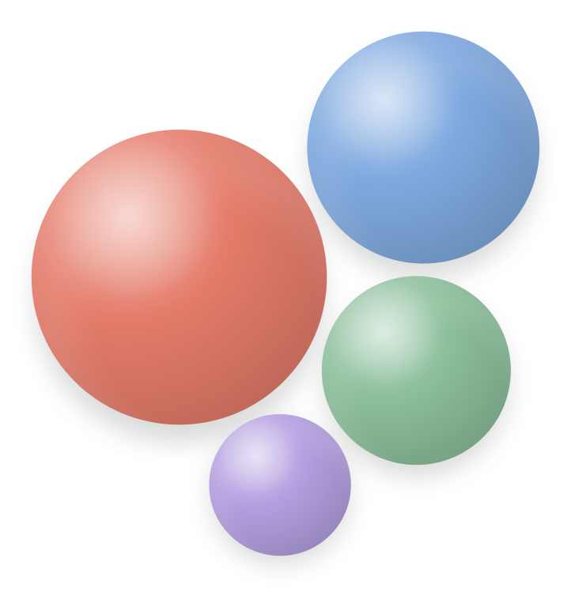
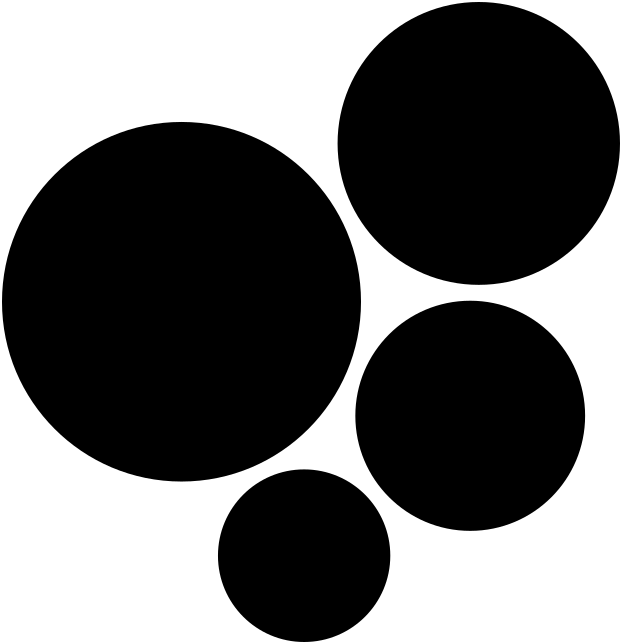
Keep it clean
- Don't put the highlighter stroke and the icon side by side. Let one of them carry the colour.
- Don't recolour or reorder the orbs, or change the mark, the stroke or the icon's sky.
- Don't set Lyra in another typeface, or outline, shadow, stretch or skew it.
- Don't use the mark as a text colour. On paper it's 2.2:1 and can't be read.
- Don't put the paper wordmark over busy photographs. Use night, or a quiet area of the image.
App icon.
Three appearances, like Apple's light, dark and tinted icons. Paper is the default: four flat, bright orbs on a white tile.
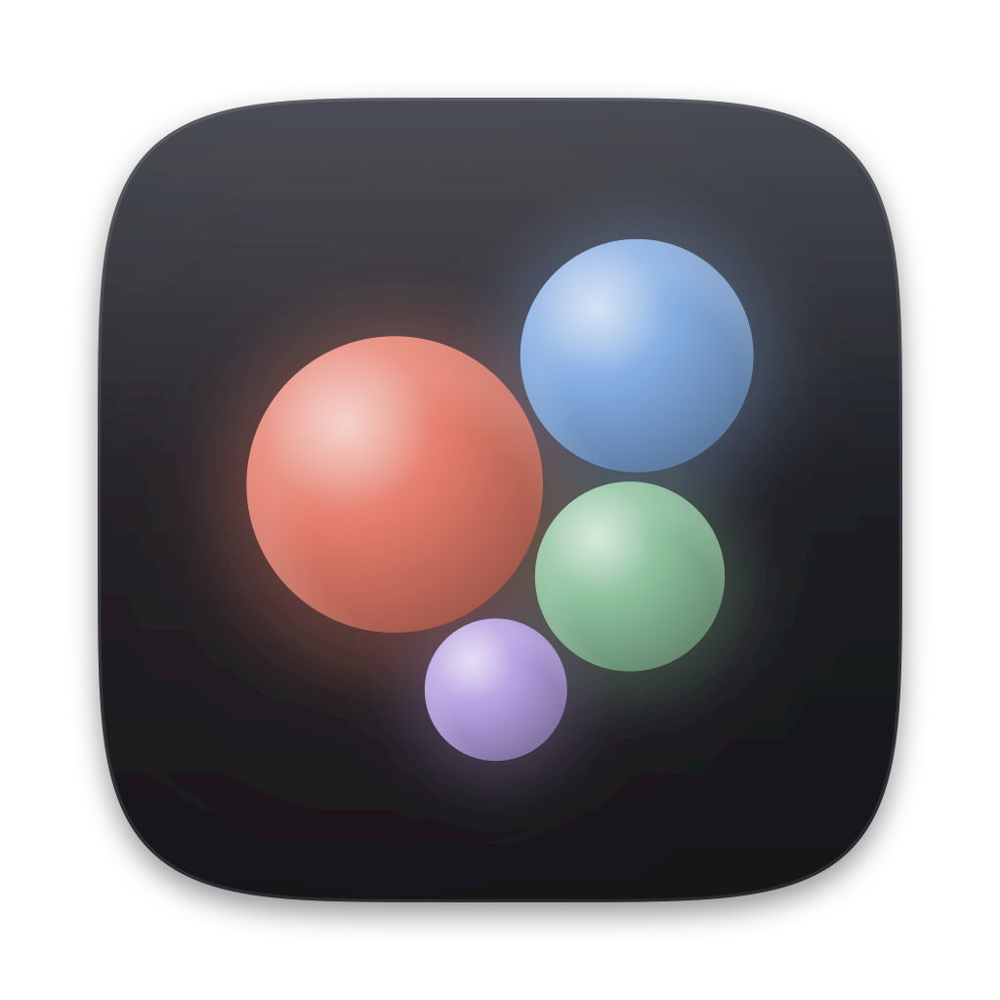
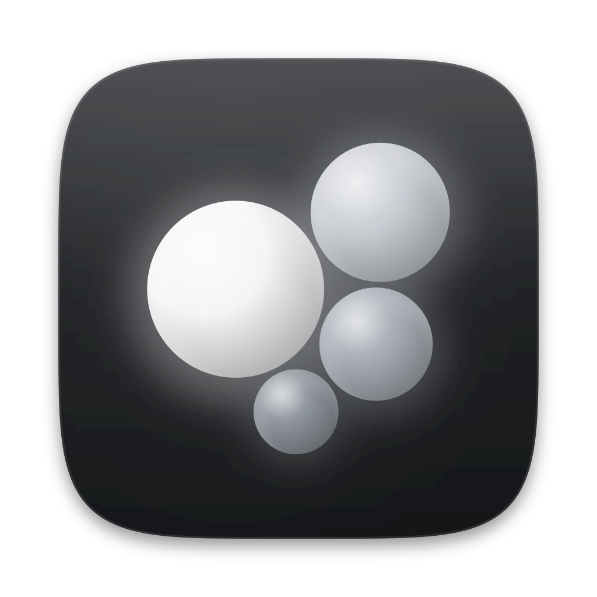
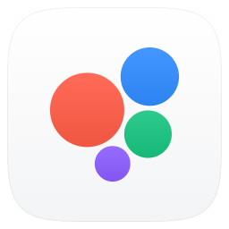
Below 48 pixels the icon is redrawn, not scaled. The gaps widen to about a pixel, so the four orbs never run together.
Colour.
Paper, ink, one mark, and the orbs. Paper is most of every surface and ink carries the words. The mark appears once, where you are: a stroke, a ring or a glow. The orbs are the new tab's balls: bright and flat in the icon and the toy, glows and favicons elsewhere. Neither is ever text or a large flat fill.
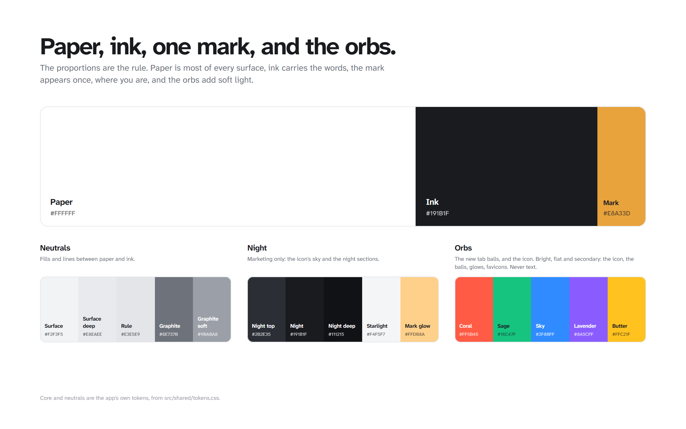
Core
Paper, ink and one mark. Almost everything is the first two.
- Paper
#FFFFFFBackground. Most of every surface.--paper - Ink
#191B1FText, controls, cluster balls, the night sky.--ink - Mark
#E8A33DThe one colour. It means here or loading. Never text, never a fill.--mark
Neutrals
Fills and lines between paper and ink.
- Surface
#F2F3F5Hover, the active chip, large quiet fills.--surface - Surface deep
#E8EAEEPressed, and toggles that are on.--surface-deep - Rule
#E3E5E9One-pixel borders and dividers.--rule - Graphite
#6E737BSecondary text and idle icons.--graphite - Graphite soft
#9BA0A8Hints, placeholders and tethers.--graphite-soft
Night
Marketing only: the icon's sky and the night sections.
- Night top
#2B2E35Top of a night gradient.--night-top - Night
#191B1FInk, used as a sky.--night - Night deep
#111215Bottom of a night gradient.--night-deep - Starlight
#F4F5F7Text and lines on night, at 92%, 60% or 30%.--starlight - Mark glow
#FFD08AThe hot centre of the mark when it glows.--mark-glow
Orbs
The new tab balls, and the icon. Bright, flat and secondary: the icon, the balls, glows, favicons. Never text.
- Coral
#FF5B45The icon's master orb.--orb-coral - Sage
#16C47FIcon orb.--orb-sage - Sky
#2F8BFFIcon orb.--orb-sky - Lavender
#8A5CFFIcon orb.--orb-lavender - Butter
#FFC21FA favicon only; too close to the mark for the icon and the balls.--orb-butter
Alpha
Overlays from the app's tokens.
- Mark wash
rgba(232, 163, 61, 0.26)The highlighter stroke on paper.--mark-wash - Hover
rgba(25, 27, 31, 0.055)Hover on small controls.--hover - Press
rgba(25, 27, 31, 0.105)Press on small controls.--press
Contrast
| Pair | Ratio | WCAG | Use | |
|---|---|---|---|---|
| Aa | Ink on paper | 17.24:1 | AAA | All text |
| Aa | Graphite on paper | 4.77:1 | AA | Secondary text |
| Aa | Graphite soft on paper | 2.63:1 | Not for text | Hints only, never essential text |
| Aa | Mark on paper | 2.16:1 | Not for text | Strokes and rings, never text |
| Aa | Paper on ink | 17.24:1 | AAA | All text |
| Aa | Graphite soft on ink | 6.56:1 | AA | Secondary text on night |
| Aa | Mark on ink | 8.00:1 | AAA | Glows and strokes on night |
Ratios are computed from the hex values. Core and neutral colours are the app's own tokens, from
src/shared/tokens.css.
Type.
One typeface: Atkinson Hyperlegible Next, drawn by the Braille Institute so that similar characters never pass for each other. In an address bar that's a security property, so it's also the brand's voice.
| Display | 700, tracking -0.045em, line height 1.0 |
|---|---|
| Headline | 650 to 700, tracking -0.03em to -0.04em |
| Lead | 400, 19 to 23px, Graphite |
| Body | 400, 17px, line height 1.55 |
| Caption | 400, 13 to 14px, Graphite |
| In the app | 13px for UI, 12px secondary, 44px for the wordmark |
Sentence case everywhere. No all caps, no letter-spaced labels, no monospace.
Aa
Browse lightly.
Browse lightly.
Browse lightly.
rn m l I 1 0 O
Icons.
A 16 by 16 grid, a 1.5 stroke with round caps and joins, and colour inherited from the text around it. The Lyra glyph is the icon's cluster drawn as rings. It has no tethers, so it never reads as the cluster button beside it.
- Back
- Forward
- Reload
- New tab
- Close
- Secure
- Site
- Lyra
- Pin
- Search
- Open
- Cluster
Voice.
Sentence case, plain verbs, from the reader's side, and true. Headlines are short and end with a full stop. Dry, not cute. An action keeps its name through the whole flow.
| Write | Not |
|---|---|
| Browse lightly. | The ultimate lightweight browsing experience! |
| Reopen 5 tabs | Restore your previous session |
| Deleted Errands. Undo | Cluster successfully removed |
| Nothing pinned yet. Press Ctrl+D on a page to keep it here. | Oops! You don't have any pins. |
| Reload (Ctrl+R) | Refresh page |
Motion.
- It answers someone.Motion follows an action: opening, dragging, confirming, loading.
- Once, then still.At most one unprompted moment per surface, and then the page goes quiet. Physics sleeps when nothing moves.
- Quick and optional.Hovers take 90 to 140ms, and everything collapses for people who ask for reduced motion.
Campaign: You are here.
One idea per frame, a lot of air, and the product as the proof. Every frame is rendered from the same UI kit as the landing page, so the browser in the ads is the browser you get. Select a frame for the full-size PNG.

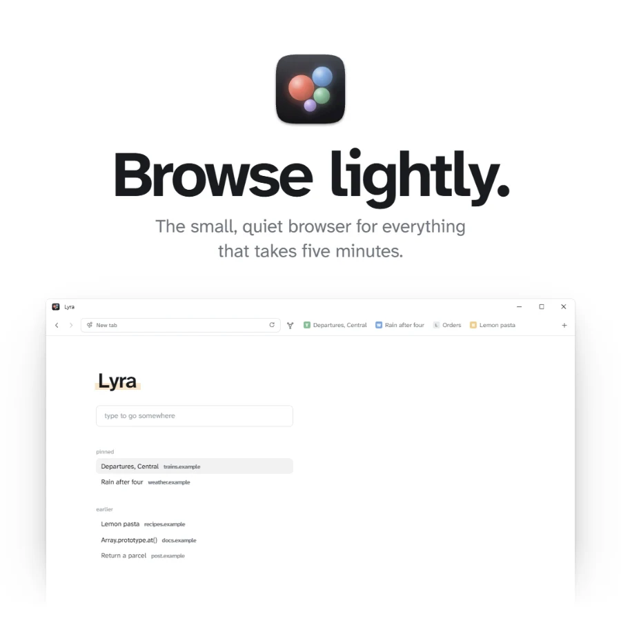

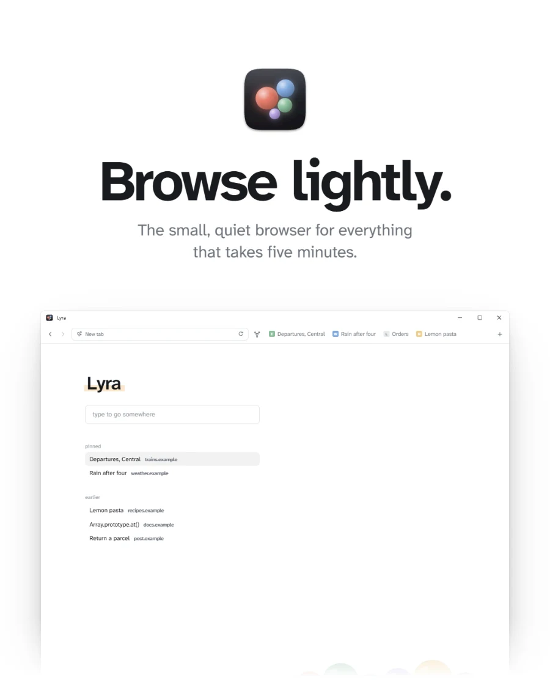

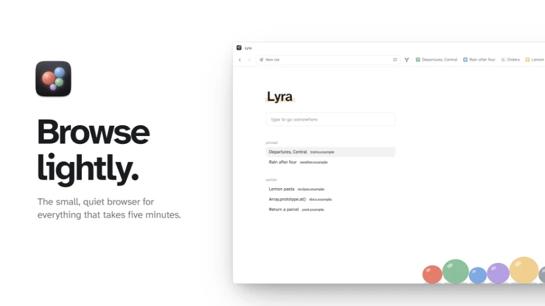

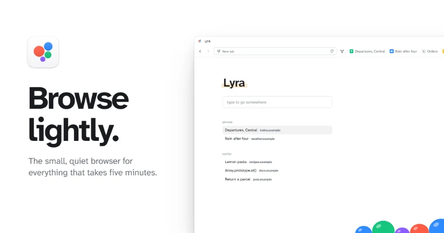

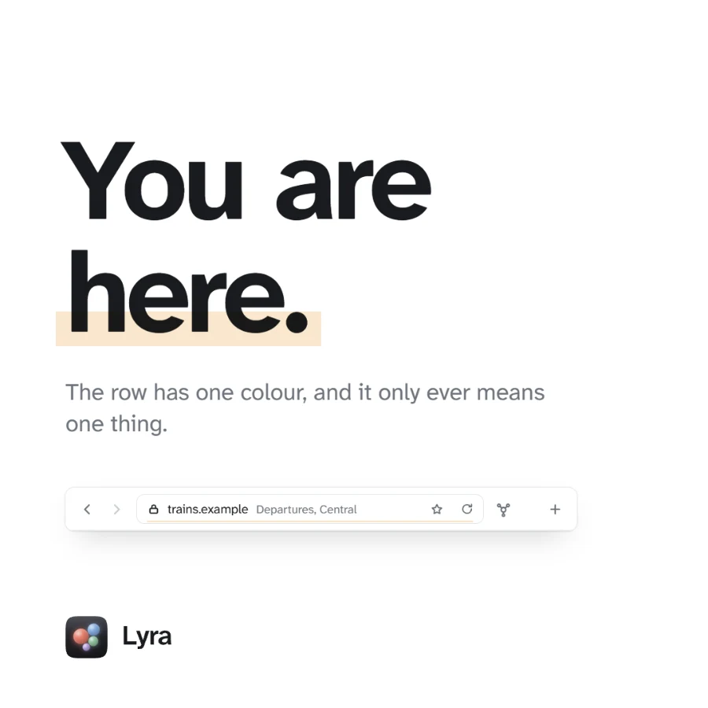

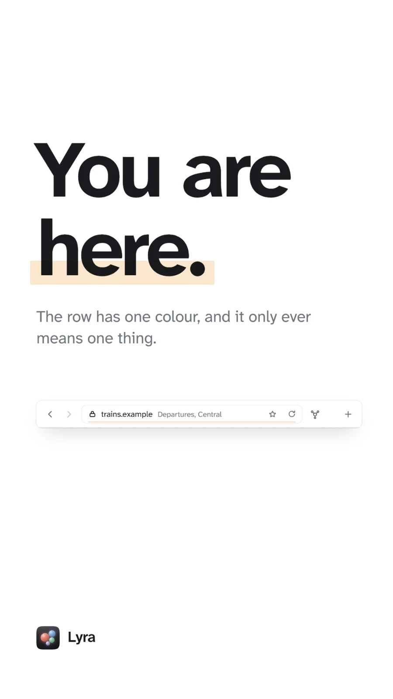

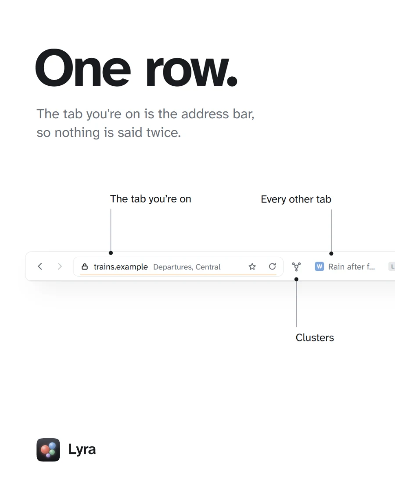

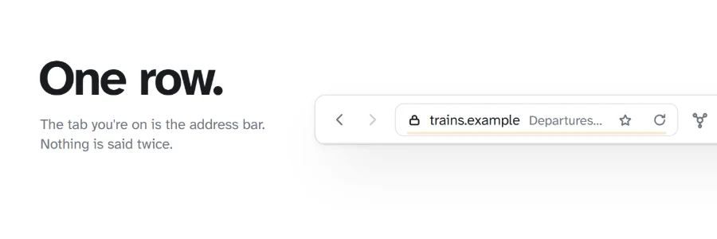

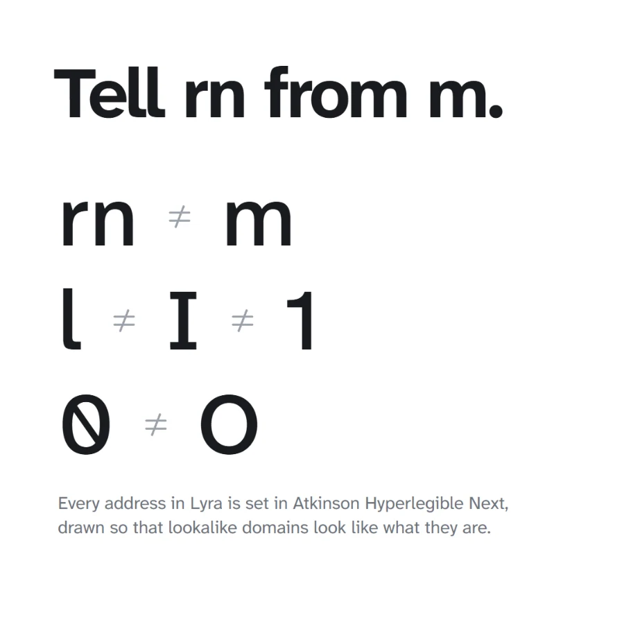

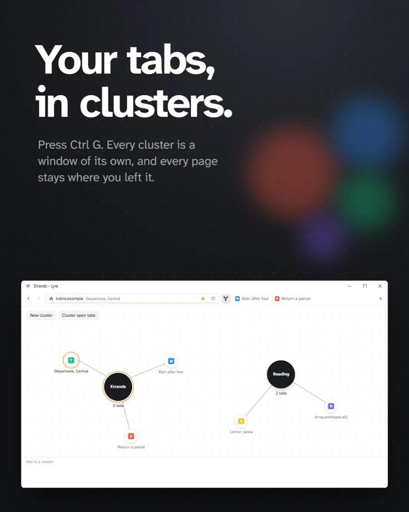

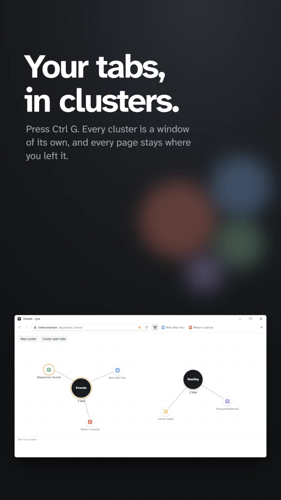

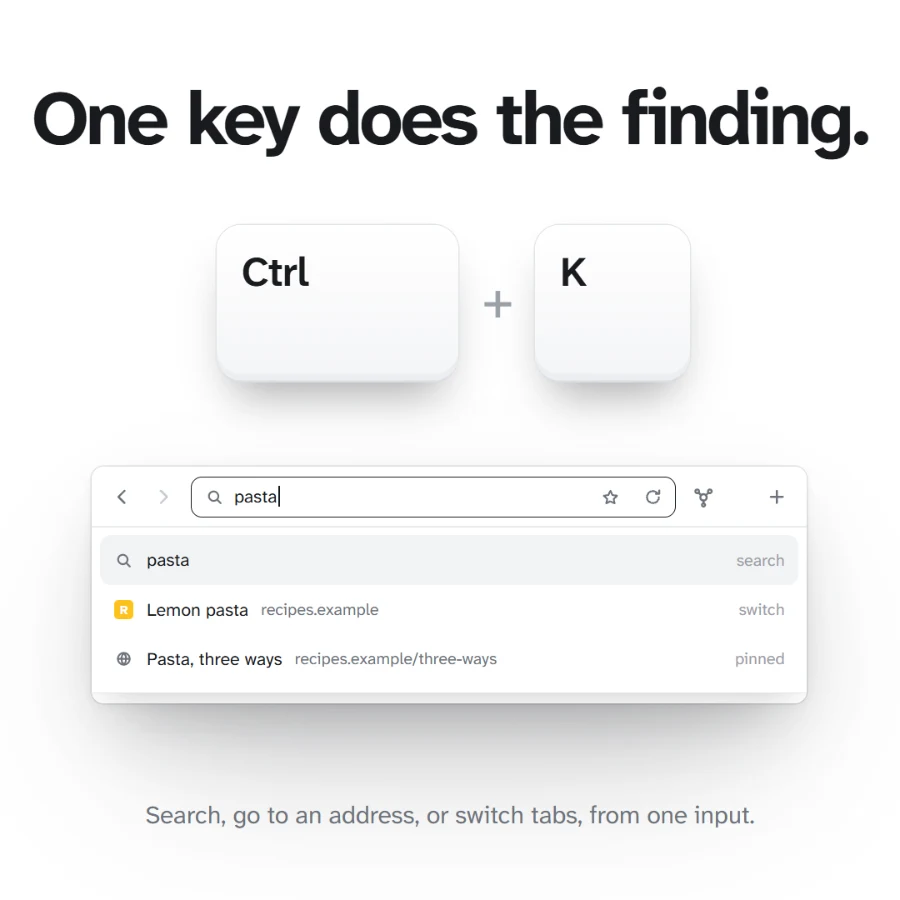

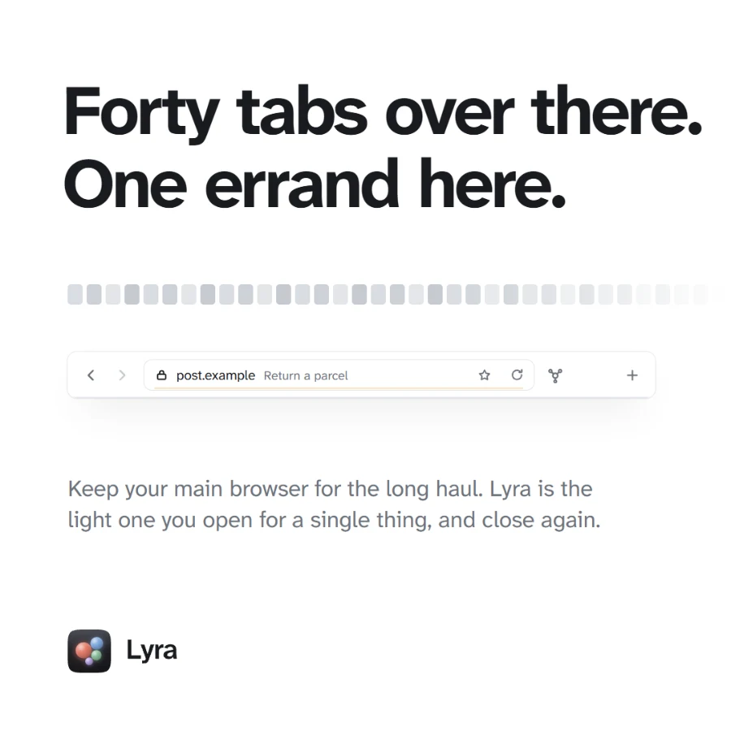

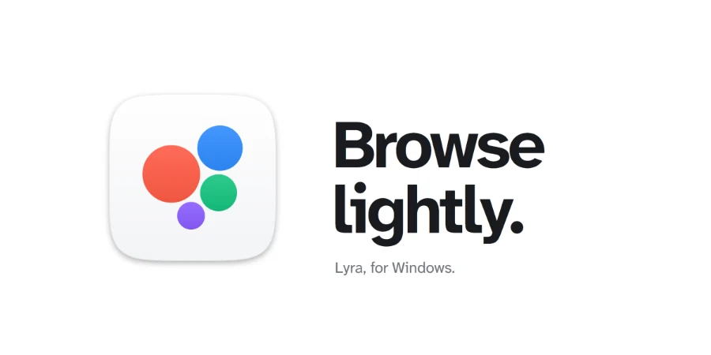

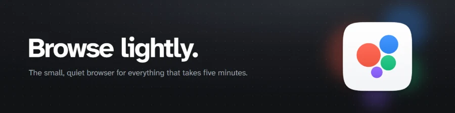

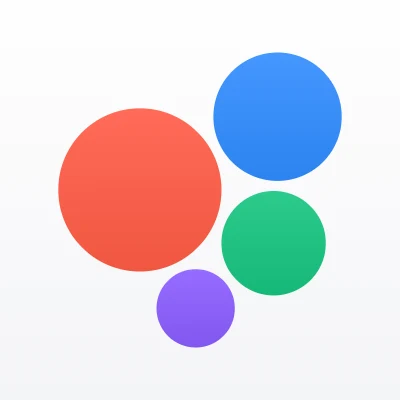
Downloads.
- The whole kit
- Icons, logos, colour files, the campaign, and the typeface with its licence.
- App icon, SVG
- The paper icon on Apple's 1024 grid. ICO and ICNS are in the kit.
- Lockup, SVG
- For paper. The night version is in the kit.
- Wordmark, SVG
- Outlined, so it renders without the font.
- Palette sheet, PNG
- Tokens as CSS and JSON, plus ASE and GPL swatches, are in the kit.


Atkinson Hyperlegible Next is licensed under the SIL Open Font License, copyright the Braille Institute of America.